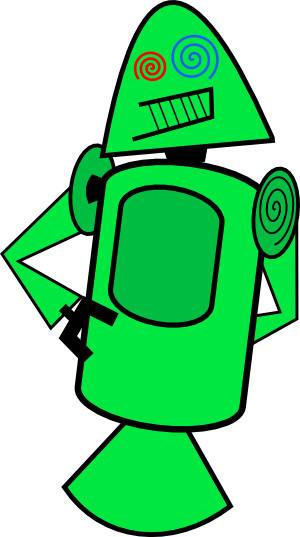
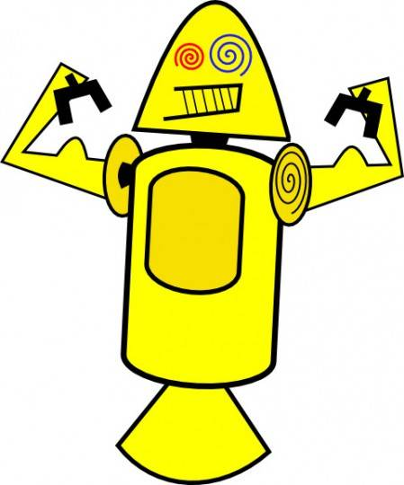
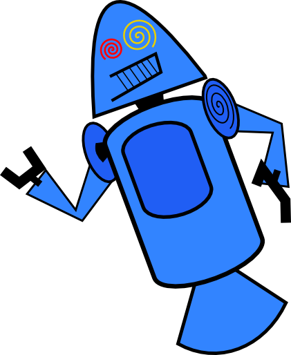
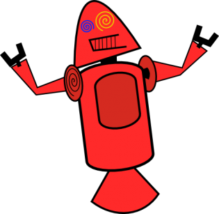

história do mascote do android
Provavelmente você sabe que o sistema operacional ANDROID, mantido pelo GOOGLE é um dos utilizadores para dispositivos móveis em todo o mundo. Mas talvez você não saiba que o seu simpático mascote tem um nome e uma história muito curiosa? Pois acompanhe esse artigo para aprender muita coisa sobre esse robozinho
A PRIMEIRA VERSÃO
A primeira tentativa de criar um mascote surgiu em 2007 e veio um desenvolvedor chamado Dan Morrill 🔗. Ele conta que abriu o inkscape 🔗(Software livre para vetorização de imagens) e criou sua própria versão de robô. O obejetivo era apenas personificar o sistema apenas para a sua equipe, não existia nenhuma solicitação da empresa para a criação de um mascote.
   Essa é a primeira versão bizarra até foi batizada em homenagem ao seu criador. Seriam os Dandroids.
SURGE UM NOVO MASCOTE
A ideia de ter um mascote foi amadurecendo e a missão foi passada para uma profissional da área. A ilustradora
Russa Irina Blok 🔗 também funcionária do Google, ficou com a missão de representar o pequeno robô de uma maneira mais agradável.